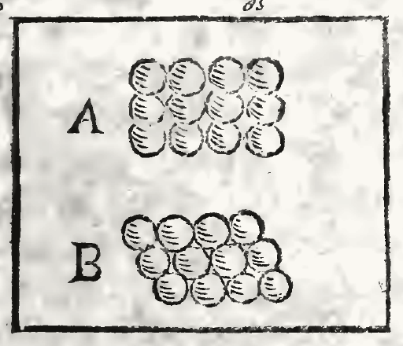
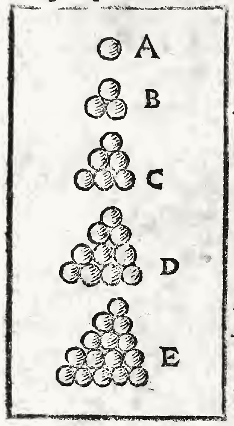

Pomegranate Seeds & Sphere Close-Packing¶
For if you gather equal loose pellets upon the same horizontal plane and press them into a narrow space so that they touch one another mutually, they unite either in a triangular shape or in a quadrangular one; in the former, six surround one, in the latter, four: in both arrangements the manner of contact is identical throughout all the pellets, leaving aside the outermost ones. In a pentagonal arrangement equality cannot be preserved, while a hexagon breaks down into triangles: so that the two orders just named are the only ones.


Now if you proceed to the tightest possible solid structure and stack layers previously fitted in the plane one above another, those layers will be either square (A) or triangular (B). If square, either each individual globe of the upper layer will stand directly atop an individual globe of the lower layer, or conversely each globe of the upper layer will rest in the hollow among four globes of the lower layer. In the former manner any globe is touched by four surrounding it in the same plane, by one above itself, and by one below itself—and thus in all by six others; the arrangement will be cubic, and upon compression cubes will be formed, yet this will not be the tightest fitting together. In the latter manner, besides being touched by four surrounding it in the same plane, each globe is also touched by four below itself and by four above itself, and thus in all by twelve; and upon compression rhombic bodies will arise from the globes. This order will resemble the octahedron and the pyramid more closely. The fitting together will be the tightest possible, so that in no other arrangement could more pellets be packed into the same vessel. Again, if the layers constructed in the plane were triangular, then in solid packing either individual globes of the upper layer stand directly over individual globes of the lower—a loose packing once more—or individual globes of the upper layer rest among groups of three of the lower. In the former manner any globe is touched by six surrounding it in the same plane, by one above, and by one below, and thus in all by eight others; the arrangement will resemble a prism, and upon compression hexagonal columns with six quadrangular sides and two hexagonal bases will replace the pellets. In the latter manner the very same result arises as arose previously by the latter manner in
f. 0032 · p. 10quadrilaterals. For let B be a cluster of three globes. Place A, a single globe, upon it as the apex; let there also be another cluster C of six globes, and another D of ten, and another E of fifteen. Always place the narrower upon the wider, so that the figure of a pyramid is formed.


Although by this stacking each upper globe rested among three lower ones, yet now—once the figure is turned over so that not the apex but an entire side of the pyramid lies uppermost—whenever you peel off one pellet from the top, four will stand beneath it in square order. And once again a single globe will be touched as before by twelve others: namely by six surrounding it in the same plane, three above, and three below. Thus in the tightest solid packing there cannot be triangular order without quadrangular order, nor vice versa.
It is therefore evident that the kernels of the pomegranate, by material necessity concurring with the laws of the kernels’ growth, are pressed into the figure of a rhombic body: since the round kernels do not push stubbornly head-on against those opposite them, but yield when squeezed into the spaces interposed between groups of three or four opposite kernels.
In the cells of bees, however, the cause is different. For bees are not crowded together in a confused heap like kernels in a pomegranate, but draw up an orderly rank by design, all facing with their heads toward one direction or the opposite, and all bracing against one another with the tips of their bellies. If this figure arose from a crowding of that kind, the cells would have to be formed over the bees from the hardening of an exuded slime, just as twisted little shells usually grow over snails. Yet it is certain that the bees themselves fashion their own cells and build up the entire tiered structure from its foundations.
Therefore the bee’s own nature possesses this instinct from its proper endowment, to build specifically in this figure; this archetype has been impressed upon it by the Creator: here neither the material wax, nor the little body of the bee, nor growth can accomplish anything.
With this noted, inquiry is now made further concerning the final cause—not one which the bee itself
f. 0033 · p. 11pursues by its own reasoning, but one which God Himself, the Creator of the little bee, held before Him when He prescribed to it these laws of its architecture.
And here at last the consideration of bodies and matter enters once again into the appointing of the end. For three things may be said concerning this end. The first is commonplace among natural philosophers, who look only to the hexagonal structure as it presents itself outwardly with its openings. For since only these three figures fill a planar area with empty space excluded—the triangle, the quadrangle, and the hexagon—of these the hexagon is the most capacious figure. And bees secure capacity for themselves to store away honey.
This reason can also be extended to the consideration of solid space in the following manner: since solid space is not divided without gaps except into cubes and rhombic bodies, rhombic bodies are more capacious than cubes. Yet this reason does not suffice: for if they seek capacity, why does each bee not fashion a round nest for itself? What need is there to chase after tiny savings of space, as though no room remained in the entire hive? More probable would be this second cause—though neither is it sufficient, for the reasons just stated—that the soft little bodies of bees are housed more comfortably in a nest of a figure with more and more obtuse angles, one more akin to the spherical, than in a cube, which has few and far-protruding corners and a flat bottom ill-suited to a rounded body.
Therefore it is necessary to add a third cause: that their labor is lessened if two bees always build a shared wall; and that in the straightness of the joined partitions there is greater firmness to sustain the entire comb than if individual little houses had been rounded and therefore easily crushed. Finally, round figures leave gaps even when pressed closest together, so that cold would insinuate itself through the openings. Against all these ills provision is made because they “hold the dwellings of their city in common,” as Virgil sings.
I therefore judge these reasons looking to material necessity so sufficient that I do not think we should philosophize here about the perfection, beauty, or nobility of the rhombic figure, nor busy ourselves trying to elicit the essence of the little soul within the bee from contemplating the figure it constructs—something we would indeed have had to undertake if no practical use of the figure had appeared.
The same must be understood regarding the pomegranate. A material necessity is evident which brings the kernels to the rhombic shape as they grow one after another. Therefore it is futile to speculate about the essence of a soul in this tree that specifically fashions the rhombic form.